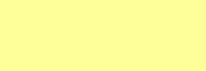

Partie 1 : synthèse additive des couleurs
Pour une image en couleur: À chaque pixel on associe 3 couleurs, le rouge, le vert et le bleu. On parle du canal rouge, du canal vert et du canal bleu d’un pixel (système RVB ou RGB en anglais).
La valeur de l’intensité lumineuse associée à chaque canal de chaque pixel d’une image est comprise entre 0 et 255 (256 valeurs possibles). On codera donc un pixel à l’aide d’un triplet de valeur (par exemple (247,56,98) en code décimal, ou son équivalent en hexadecimal : (f7,38,62)
Ouvrir le lien suivant : www.proftnj.com/RGB3.htm
Question a: à l’aide du logiciel : Quelle est la couleur donnée par ce triplet de valeurs ? (247,56,98)
Question b: Combien de couleurs différentes est-il possible d’obtenir avec ce système RVB ? (combinaison de 3 couleurs, codées chacune sur 256 valeurs,…)
Question c: Pour chacune des couleurs du tableau, indiquer le code couleur RGB décimal correspondant:
| code couleur RGB | |
|---|---|
 |
|
 |
|
|  | |
Astuce: On pourra verifier l’exactitude de la reponse avec l’outil de prélèvement de couleur (logiciel Paint). Suivre le tuto suivant: https://www.pcastuces.com/pratique/astuces/5453.htm
Partie 2: Les données EXIF
Certaines informations, contenues dans le fichier image, donnent des informations sur les conditions de la prise de vue, le type d’appareil utilisé, la géolocalisation, les dimensions de l’image… Ces données suivent un format précis du standard EXIF.
Utilisez un logiciel en ligne de lecture des données EXIF, comme par exemple : onlineexifviewer.com/
- Télécharger l’image suivante sur votre disque dur
- Select image depuis le logiciel en ligne
Le logiciel met ces données EXIF sous une forme lisible par un être humain :
Question d compléter les informations contenues dans le fichier de cette photographie :
| information | donnée EXIF |
|---|---|
| L’appareil photo utilisé | |
| La lentille de l’objectif | |
| Les coordonnées GPS du lieu où la photo a été prise | |
| La date de la prise de vue | |
| Le nombre de pixels | |
| Poids de la photo en ko Mo |
Question e: Quel est l’endroit où la photo a été prise (pays, region, commune) : utiliser le lien proposé vers openstreetmap par exemple.
Partie 3: Vrai ou Fausse photo?
Le paragraphe suivant explique qu’il est possible de faire une recherche par image, et, peut-être, de retrouver la source.
Question f: L’image suivante est-elle une vraie image?